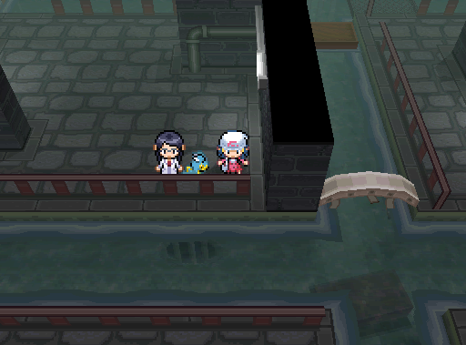

| ||
 | ||
| ||
The Veilstain is a subterranean sewer area located beneath Veilstone City, which the player must traverse in order to reach the emergency exit of the Galaxias Labs.
The Veilstain serves as Veilstone City's underground sewer and drainage system, tasked with managing and discharging its toxic waste. Access from the main entrance is granted by defeating a self-proclaimed Guardian - a Punkster - who only allows passage to those he deems strong enough to handle the dangers ahead.
It presents a dark, industrial environment with a distinctly grim and utilitarian atmosphere. The flooring is paved with worn, grey stone tiles, bordered by red-striped safety railings that line the narrow walkways. Faint green piping runs along the walls, hinting at the area's function as waste management infrastructure.
A murky green water channel flows steadily alongside the walkway, its surface reflecting the dim, sterile lighting of the sewer. A small arched wooden bridge spans part of the channel, offering a simple but necessary crossing between platforms. The water appears tainted due to the chemical runoff from nearby industrial sites, mostly the Galaxias Novus Pilot Plant - In fact, Surfing such water will increase the chance of poisoning for the first Pokémon in the party.
Though primarily an industrial utility space, the Veilstain has become a known haunt for sketchy individuals looking to bargain or make deals away from the public eye. This kind of underground activity is most prevalent in the Western wing, which is largely unsupervised and tucked beneath the city's lesser-monitored sectors. Access to the Western wing requires the use of Surf in Veilstone City through an entrance located behind the player's Homebase.
In contrast, the Eastern wing—located under the Pristine Lounge—is subject to surveillance and control by Galaxias Novus, making it slightly more regulated, though no less dangerous.
At the deepest point of the area, the player encounters a secured electronic door‚ÄîGalaxias Labs‚Ä? emergency exit, intended for use only in critical situations. The door can only be opened after obtaining the Picklocker Module for the Calypsolens, which is unlocked by reaching the Production Control Hub of the Pilot Plant. With the module active, the Calypsolens can bypass the door‚Äôs security system and grant access to the restricted exit.